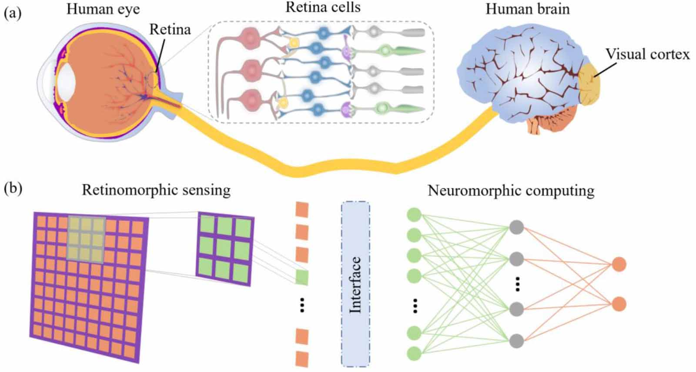
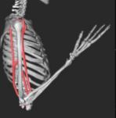
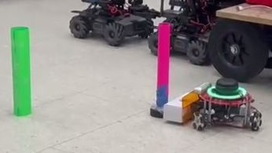
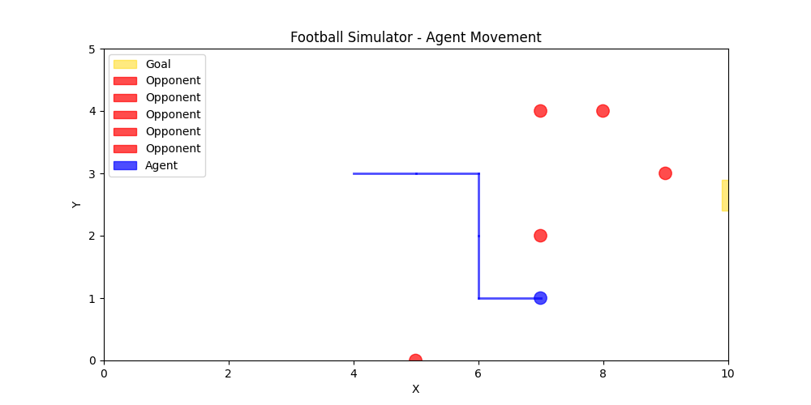
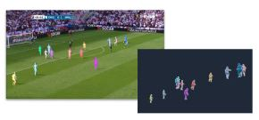
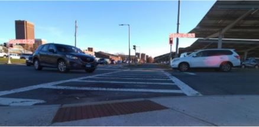
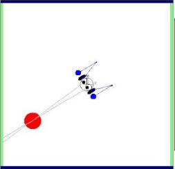

Research Projects
These are some of the research projects that I have worked on combining the fields of Neuroscience, Artificial Intelligence and Robotics.
If you find any of them interesting and would like to learn more feel free to reach out!
Born to Swim
Neural Circuit Architecture for motor learning based on the biological motor circuit of the C. Elegans eel. Significantly outlearns swimming tasks compared to artifical MLPs by using the biological neural net as an evolved genetic prior.
View Project Demo Paper
Neuro-eye
Neuromorphic Vision Sensor for high speed event-based object detection with low power consumption inspired by the human retina and visual cortex. Electronic circuit encodes photon events into spike trains and processed using spiking neural networks.
View Project Demo Paper
Bionic Reflex
Intelligent reflex arc module for the neuromuscular system of prosthetic limbs and exoskeletons. Capable of generating stabilizing reflexive motor torques and muscles activations in response to unexpected perturbations during locomotion.
View Project Paper
I.D.R.I.B.L.
Intelligent Robot hockey player capable of close-control puck dribbling and goal scoring using human-based live dynamic vision and image-based space localization.
View Project Demo Paper
Pocket A.C.E.s
Intelligent Genetic Evolution Based Poker Agent capable of beating humans at a game of Texas Hold-em.
View Project Paper
Agent CR7
A.I. football player trained using dopamine reward-based reinforcement learning capable of dribbling and scoring past defenders by finding the best path towards the goal and the best position to shoot from resulting in the highest expected goal (XG).
View Project Paper
3D Neural Rendering for Sports
A 3D multi-human pose and scene reconstructor using a neural mesh-rendering deep learning model. Capable of rendering 3D scenes for outdoor scenarios consisting of multiple objects from a single image.
View Project Paper
Safe Street Crossing Robot
Personalized Vision-Language assistant for enhancing safe street navigation for the blind embodied in a robotic guide dog. Capable of understanding real-world street scenarios and provide navigational assistance using natural language.
View Project Paper
Roger - The Robotic Crab
Robot crab capable of playing PONG. Features include 3 degree arm kinematics, 180 degree stereo observation with depth perception, translational and rotational motion, path-planning, and signal processing.
View Project